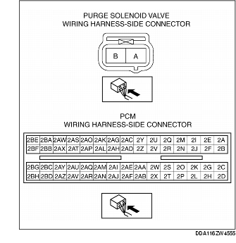

Purge solenoid valve inspection [ZY]
Airflow Inspection
1. Disconnect the negative battery cable.
2. Remove the purge solenoid valve.

3. Inspect airflow between the ports under following conditions.
- • If there is no malfunction, carry out the "Circuit Open/Short Inspection".
-
• If there is any malfunction, replace the purge solenoid valve.

Circuit Open/Short Inspection

1. Inspect the following wiring harnesses for an open or short circuit. (Continuity check)
Open circuit
- • If there is no continuity, the circuit is open. Repair or replace the wiring harness.
- - Purge solenoid valve terminal A and PCM terminal 2I
- - Purge solenoid valve terminal B and PCM terminal 2S
Short circuit
- • If there is continuity, the circuit is shorted. Repair or replace the wiring harness.
- - Purge solenoid valve terminal A and body ground
- - Purge solenoid valve terminal B and power supply